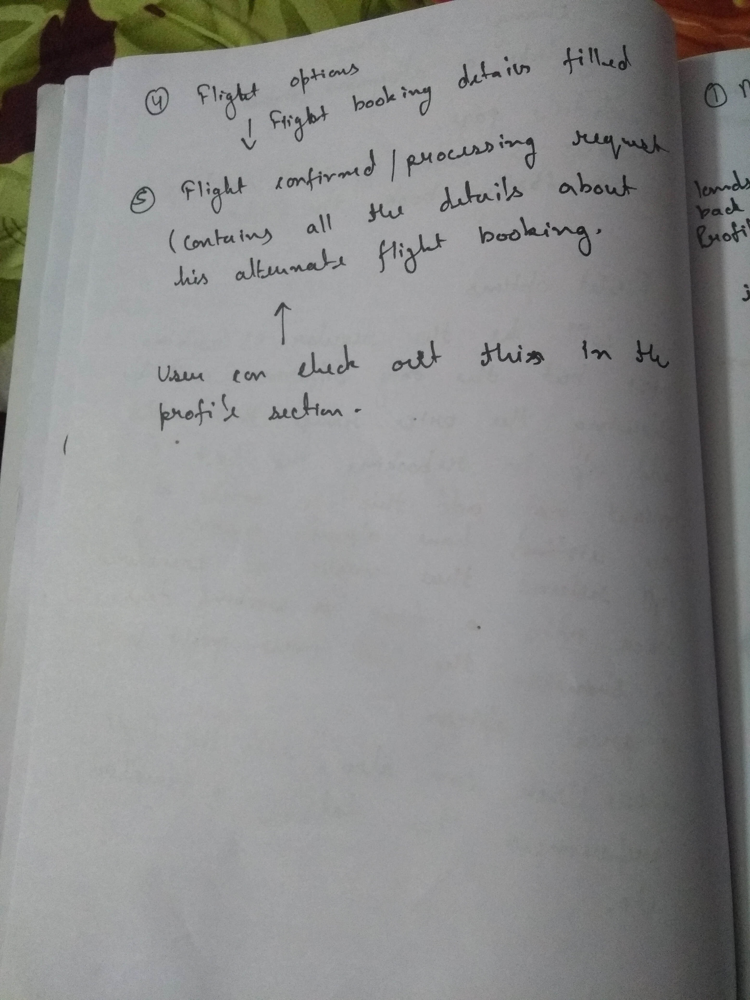

The Scenario
Four people- a Cleartrip user and three of his family booked a flight from Bangalore to Delhi. On the way to the airport, he gets a notification from the app that his flight has been canceled due to some technical difficulty and the airline is unable to accommodate them in an alternate flight and will process a full refund.
The Problem
Think about how we can help the user book an alternate flight to Delhi on his Cleartrip app, given that his anxiety levels will be high and he will not be happy changing his travel plans significantly.
Points
-
Where to land the user when he clicks on the push notification.
-
Alternate flight booking flow rather than the usual flow.
-
How to gather information from the user rather than the usual flow (Manually) of gathering information.
-
Act as a friend rather than increasing his anxiety level.
-
A friction-free UX for the app to quickly cater the user needs and to reschedule his flight with Cleartrip (rather than going to other websites). Also making him happy and less annoyed with changes in his travel/flight plans.
-
A common solution that would help customers in different scenarios and different needs.
The Solution
Keeping in mind the high anxiety level of the user and to help him in this scenario. I have assumed Cleartrip to be acting as a friend of the user and made my iterations on the same line.
Rough case study :


The complete solution carries a series of steps that the user follows to get the job done.
Notification Page
Kept the notifications page exactly the same modified with the message of the flight canceled by airlines due to technical snag notification along with the icon update.
For the assignment, I have taken icons from flaticon.
Notification Page (Expanded)
This page carried a detailed view of the notification he received. Why is the flight canceled, What to do next? and how to book an alternate flight with a special coupon code that works only when the user is booking or rescheduling his/her particular/round trip with Cleartrip.
When a user hits on "Book Alternate Flight" button he is redirected to the reschedule trip page (a). Where he needs to select the flight he wants to reschedule and the travelers in the flight.
Reschedule Trip - Step 1
In the first step, you need to choose alternate travel dates for the onward journey and/or the return journey and select the passengers for whom you want to change flights. For the remaining passengers and legs of the journey, the original booking would stay as is.
While the user is picking the travelers he is making sure things are getting done just like that as he doesn't need to enter the name of the travelers manually. The information will be fetched from the canceled flight.
By clicking on the Search Alternate Flight button below - User will land on the second step which is choosing a flight.
Reschedule Trip - Step 2 (Flight Options)
Once you’ve selected the new dates and the passengers/legs you want to change, you’ll see a list of flights to choose from.
This page might have minor changes in the price when it comes to rescheduling a flight which is "Scheduled" rather than "Cancelled". In that case, fares will show the difference you need to pay after taking into account the rescheduling fee and the fare for the revised dates. If this difference is negative, you’ll get a refund for the difference.
In the case of canceled flight users will see the full fares rather than a difference as the airlines have already processed a full refund that will be sent within the next few working days.
Reschedule Trip - Step 3 (Secure flight/Travel insurance)
It’s easy to add insurance to your domestic flight booking, you just have to check a box while reviewing your fares and itinerary. The image above highlights how easy it is to add travel insurance to your domestic flight bookings. You can either skip this step if you want. In that case, the button text might change to skip this step.
travel insurance covers you against the following pitfalls of modern day travel:
-
Flight delays
-
Medical expenses incurred while traveling
-
Lost baggage
-
Flight cancellations due to sickness, injury or worse
Reschedule Trip - Step 4 (Payment)
The payment page is as similar to the current version of the Cleartrip. I have used the same modules that I've been using in the product (like - booking summary)
User can add the coupon code mentioned in the notification here to get discount when he is booking an alternate flight with Cleartrip.
Booking Confirmed
As far as the post-booking experience goes, the booking confirmation page is one of the key user touch points. The user sees the flight booking confirmation screen after his payment has been processed and flights have been booked.
Here are some of the things that a user can do after he has completed his booking -
-
Review his booking/ payment details (Users are too anxious to find out what they’ve been charged/ verify if the transaction went through without any problems)
-
Print Tickets
-
Select Seats
-
Send tickets / PNR Info to his co-travelers
-
Share trip details on Twitter/ Facebook etc
-
Book a hotel
-
Book airport transfers (Uber/ OLA/ Airport Cabs)
-
Locals
Profile page and Flight Details (Cancelled)

This is the same as the current one just the canceled messaging has been changed.
On clicking the canceled flight users can check information about that flight.
The cancel button is disabled here as the flight is already canceled. He can only book an alternate flight.
THANKS FOR READING. :)